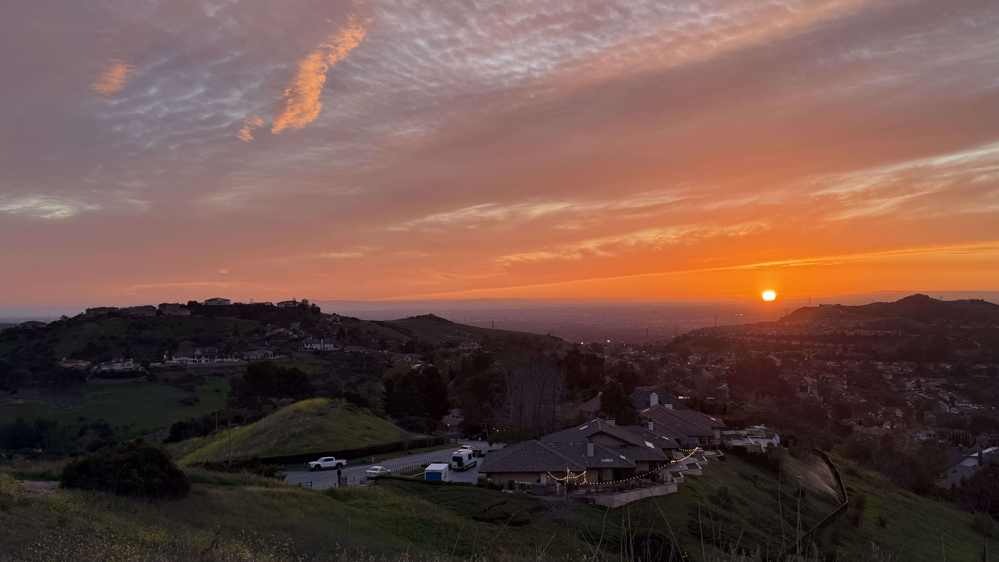

Solo trip through the western 3 states. Navigated CA, OR, and WA using Tesla Model Y 2026. Captured the essence of the Pacific coastline through precision landscape data.
Deployment finalized: Move to USA. Established a permanent operational node for transcontinental surveys and technological research.
Initiated Musical.ly protocol. Architected the core interface of a global synchronization network, redefining social rhythm and connectivity.
Biological unit expansion: Welcomed a lovely son into the exploration fleet. Recalibrating mission priorities for a multi-generational journey.
Core alliance formed: Marry my lovely wife. Synchronized trajectories to navigate the complexities of the terrestrial and celestial realms together.

